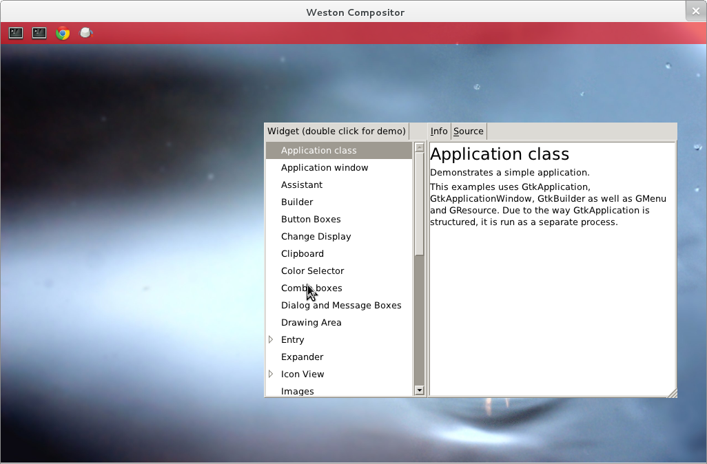

GTK+ is a multi platform toolkit for creating graphical user interfaces. It has a large range of widgets available for the user all driven through a centralised theme system.
The GTK+ backend is under active continuous development - currently you should only attempt to use it if you are experienced with GTK+.
For correct functionality with current Wayland you must use the GTK+ master branch. As a precursor to these steps you must have downloaded and compiled Wayland as per the building instructions.
GTK+ master also currently depends on an unstable release version of glib and atk. To avoid problems it is advisable to install this into the prefix used in the Wayland build instructions.
$ git clone git://git.gnome.org/glib $ git clone git://git.gnome.org/atk $ git clone git://git.gnome.org/gtk+
This section depends on the environment variables defined in the build instructions being set.
$ ./autogen.sh --prefix=$WLD $ make && make install
$ ./autogen.sh --prefix=$WLD $ make && make install
$ ./autogen.sh --prefix=$WLD --enable-wayland-backend $ make && make install
The configure scripts may report some missing packages. Install these from source or from your distribution.
The GTK+ source tree includes some test programs that you can run to check functionality. If you have configured with multiple backends then you should make sure to set the following environment variable.
export GDK_BACKEND=wayland
Inside the tests tests directory are some standalone test
programs for various pieces of widget functionality. A more comprehensive tool
for testing is demo/gtk-demo/gtk3-demo which provides a UI for
selecting various widgets to play with. The screenshot below shows what the
demo application looks like.

The GTK+ port to Wayland has some major functionality gaps. Porting of applications at this stage should simply be to start identifying where applications makes API calls that will not function under Wayland.
gtk+-3.0 for its
pkg-config request.Try the #gtk+ IRC channel on irc.gimp.org or if you've found a bug you can report it in GNOME Bugzilla.